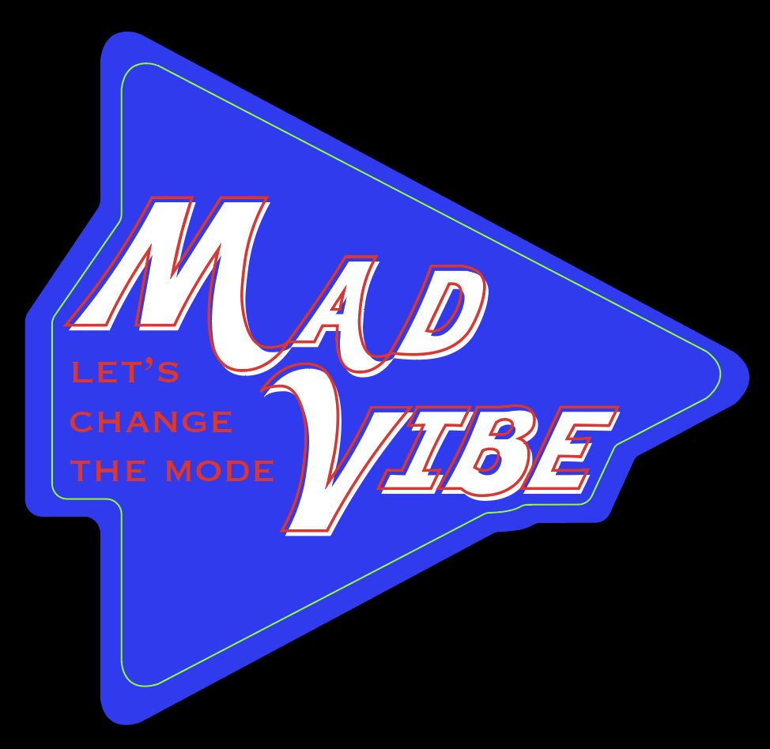
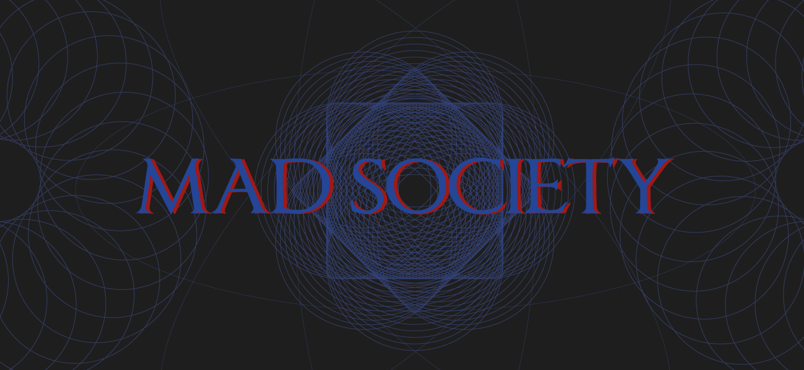
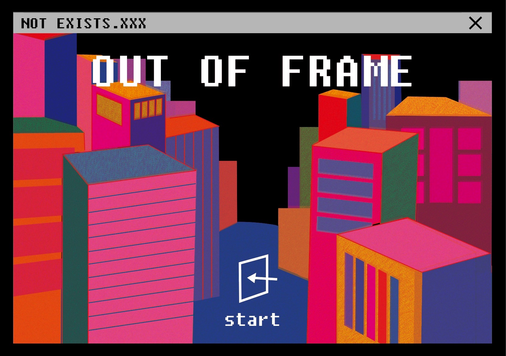
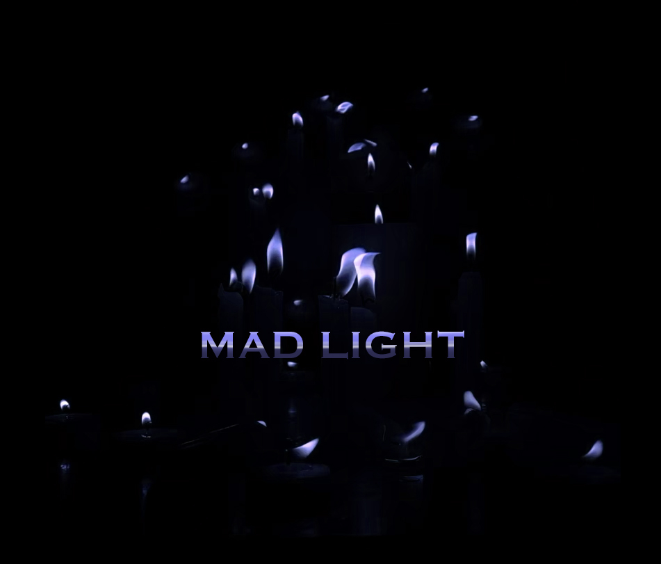
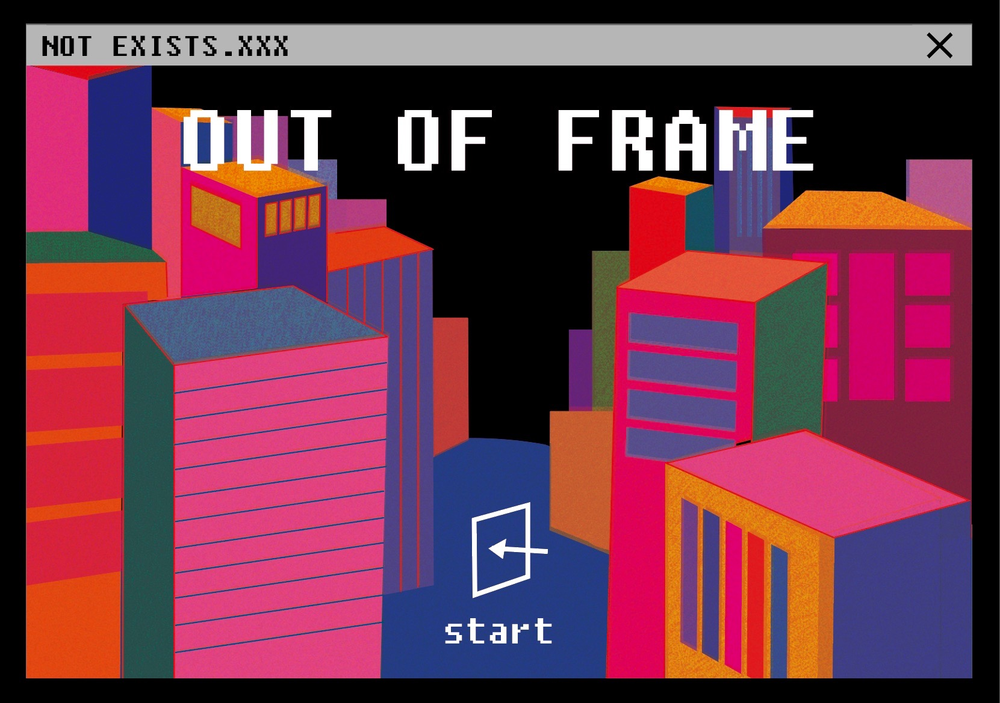
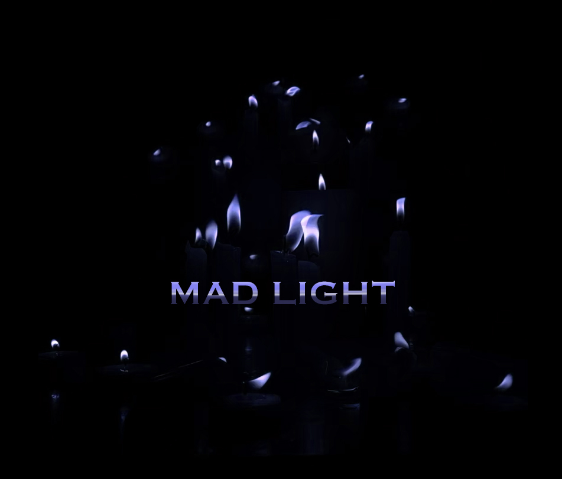

<!-- ABOUT -->
PRISMLABO는 빛과 소리를 통해 다양한 실험을 하는 영상 실험실입니다.
영상매체를 통해 기존의 고정된 틀에서 벗어난 새로운 시각을 제시하고, 다양한 실험을 통해 재미있는 영상 프로젝트를 기획합니다.
팀원 각각의 스타일과 해석을 바탕으로 다채로운 영상을 제작하고자 합니다.
PRISMLABO is a video laboratory that conducts various experiments through light and sound.
Through video media, we propose new perspectives away from the existing fixed frame,
and we plan interesting video projects through various experiments.
Based on the style and interpretation of each team member, we are going to produce a variety of videos.
<!-- K-MV PROJECT -->
PRISMLABO의 팀원 3명씩 3개의 팀을 만들고 각 팀별로 케이팝 뮤직비디오를 제작하는 프로젝트입니다.
#BLACK
#CLOUD
#SARYEONI
<!-- MAD COLLECTION -->
PRISMLABO 구성원 개개인의 개성이 담긴 실험실입니다. 스티커를 클릭하면 작가 개인 페이지로 이동합니다.



 





<!-- K-MV PROJECT -->
BLACK
강유진 우예인 이채원
<!-- K-MV PROJECT -->
CLOUD
김도연 류현서 한진희
<!-- K-MV PROJECT -->
SARYEONI
박지수 안규미 조수민
<!-- MAD EDITION -->
이번 전시는 제 1회 이화여자대학교 조형예술대학 소모임 연합 전시이자, 영상 실험실 프리즘라보의 첫 전시이기도 합니다.
이를 기념하기 위해 구성원이 제작한 특별 에디션입니다.
PRISMLABO RADIOACTIVE MATERIAL
<!-- ADDRESS-->
College of Art & Design, Ewha Womans University
52, Ewhayeodae-gil, Seodaemun-gu, Seoul, Republic of Korea
2020prismlabo@gmail.com
ⓒPRISMLABO. All rights reserved.